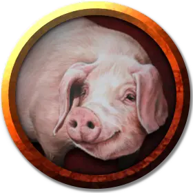

Свинья
Pig
Средний Зверь, без мировоззрения

Класс Доспеха 10 (природный доспех)
Хиты 5 (1к8 + 1)
Скорость 30 футов
| мод | спас | ||
|---|---|---|---|
| СИЛ | 13 | +1 | +1 |
| ЛОВ | 11 | +0 | +0 |
| ТЕЛ | 12 | +1 | +1 |
| мод | спас | ||
|---|---|---|---|
| ИНТ | 2 | −4 | −4 |
| МДР | 9 | −1 | −1 |
| ХАР | 5 | −3 | −3 |
Чувства пассивное Восприятие 9
Опасность 0
Бонус мастерства +2
Среда обитания Лес, Луг, Холмы